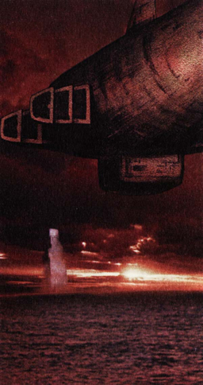

 |
| (Paet's
Report) - Research Book on Mel-Kava How to destroy Mel-Kava (1/3) From the old sayings in Zoah, (2/3) To shoot down Mel-Kava you must destroy these
engines, but the path is blocked by 'the crawling guardians'. The name
is from an old legend, they might not exist, but be wary. (3/3) Legends say that Mel-Kava is Light Particle(1/3) Mel-Kava emits energy particles. My recording device's orbiter was destroyed as soon as it touched an energy particle. Even a dragon, struck directly by a particle, would surely be blown away. (2/3) Your best hope would be to destroy the exhaust
ports. Atop Mel-Kava are dozens of them. If you destroy them all, the
ship may (3/3) If you cannot stop the particles, you must somehow avoid being hit. The particles pour endlessly from the engine, continuously impeding forward progress. Perhaps there is a device that can protect you. |